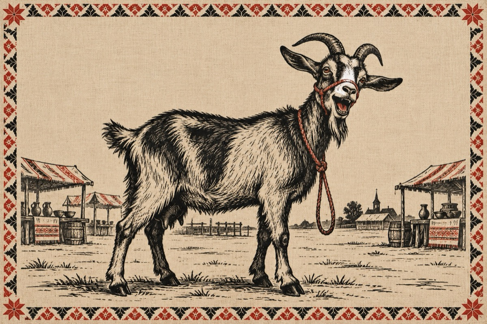

Ileana șâ vasâli
– Fa fimei m-am gândit
Așa ni-o vinit pi loc
Fărâ sâ hiu pregătit
Sâ mergim la iarmaroc!
Vreau sâ ni luăm o caprâ
Sâ him șâ noi gospodari.
– Tu n-ai dupâ ci be apâ
Pi cai mari vrei sâ ti dai,
Câ-ți vini așe de-o datâ
Ca sâ ti gospodărești.
Tu n-ai găinâ-n ogradâ
Cum sâ ti chivernisăști?
Tu știi ci-nsamnâ o caprâ
Ti gândești oleacâ amu?...
Ti behăi ca o soacrâ
Și-i mai ceva ca dracu!...
– Auz’… sâ nu ti iei tu di mama,
Fiind câ ia m-o crescut.
Sâ nu-o asămuiești cu capra
Ileanâ, o-i priceput?...
Câ nu vreau sâ spun mai mult!...
Nu știu undi vrei s-ajungi
Ca sâ mă faci câ-s di ghinâ,
Pi caprâ poți ca s-o mulgi
Nu s-aștepț’ sâ sâ ouă o găinâ!
Pi când dacâ vrei sâ știi
Di mergim la iarmaroc
Ni clătim șâ noi ochii
Nu sâ stăm închiși în casâ ca un mormoloc!
Ai sâ vez’ ci ghini-ț pari
Câ mai ieș’ țâ tu pin lumi
Sâ iei chibriti țâ sari
Șâ drojdii, sâ faci pâni!
Așa câ, nu mă mai bati la cap
Io-s bărbatu-to, nu-s țap!...
– Tu vrai chibriti șâ sari
Ș-o caprâ în loc di mini
Șâ mătii ci ghini-i pari.
Vrei sâ mă faci di rușâni?!
Tu știi, câ io ti iubesc pi tini!
Băi Vasâli, pi tini nu ti fac țap
Dacă-ai hi m-aș bucura.
Bagăți mințurile-n cap
Io vreau sâ hiu capra ta!
Lasă-l naibii iarmaroc
Șâ trezăștiti odată
Câ tu iești plin di noroc!
Umbli-aiurea dup-o caprâ
Cu-așa fimei frumoasâ…
Hai sâ ni băgăm în casâ!
Vasile Groza